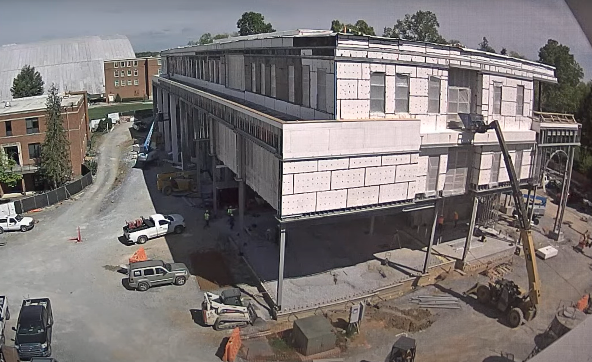
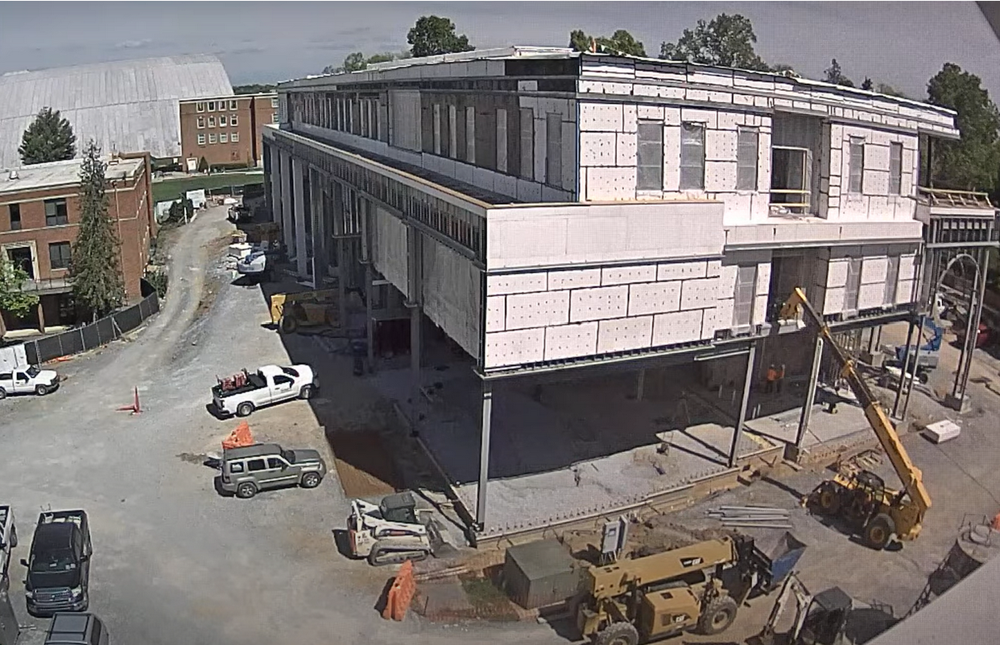

Entry 10.1
The site is mostly clear, with a traffic cone positioned near the center of the driving path and two orange barriers placed near the building. A total of 11 crew members appear to be on site, two on the third floor and 9 on the first floor, engaged in machine operation and activities on the backside of the building. A pickup truck is parked nearby, carrying what appears to be traffic cones or orange tanks in its bed. Toward the back left of the building, a blue boom lift is in use, with a crew member working on the second floor ceiling.
Entry 10.2
At 11:12, a telehandler positioned near the front right of the building begins lifting a garbage bin to the third floor. The lift takes approximately one minute. A crew member removes part of a wooden frame to create an opening, allowing them to load leftover materials into the bin. The materials vary in size, and when larger boards are involved, two workers assist in lifting and tossing them into the bin. By 11:23, the bin is full and is lowered back down. The telehandler then drives off camera, which takes about three minutes. As it exits, a second telehandler immediately moves into position, indicating strong communication and coordination among the crew. The total cycle time for this operation is approximately 14 minutes.
Entry 10.3
At 11:28 AM, the telehandler lifts materials to the second-floor gap, taking approximately two minutes. By 11:33 AM, the telehandler carrying the garbage bin returns with an empty garbage bin and remains idle for two minutes. At 11:36 AM, another telehandler positioned on the second floor lowers carrying what appears to be metal framing, this takes three minutes. Both telehandlers turn left and pass each other, efficiently swapping positions. The telehandler carrying the metal framing proceeds toward the back left of the building, a trip lasting two minutes, while the telehandler with the garbage bin raises to the third floor, also taking two minutes.
Entry 10.4
On the third floor, two crew members continue to toss out material and dust. At 11:44 AM, the telehandler with the fork attachment returns and remains idle for four minutes. By 11:48 AM, the garbage bin is filled and lowered to the ground floor. The telehandlers then repeat their maneuver, rotating around each other taking roughly one minute. The telehandler equipped with a fork attachment lifts to the second floor and returns carrying what appears to be a basket of materials. This operation takes three minutes, after which the telehandler drives off camera. Shortly afterward, the openings on the third and second floors are re-covered, indicating that material removal in those areas is complete.